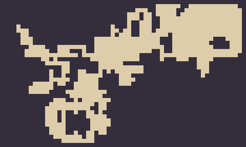
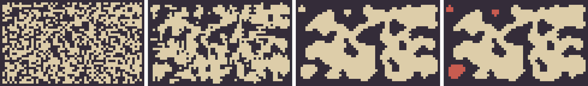
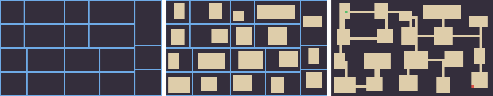

10. 手続き型生成
第 8 章と第 9 章では、デザイナーが手作業でレベルを作ることを前提にしていた。これに対して、アルゴリズムによってレベルやアイテムなどを自動的に作ることを、手続き型生成（プロシージャル生成）と呼ぶ。この章では、マップを生成する代表的な 3 つの方法と、生成したマップを検証する方法を学ぶ。
10.1. 手続き型生成の利点と限界
手続き型生成は古くから使われてきた。1980 年に作られた「Rogue」は、遊ぶたびに異なるダンジョンを生成し、後に「ローグライク」と呼ばれるジャンルの源流になった。現在でも、洞窟や地形を無限に生成するゲームや、毎回異なる構成のレベルを組み立てるアクションゲームなど、多くのゲームで使われている。
利点 |
限界 |
|---|---|
遊ぶたびに異なる体験が生まれ、繰り返し遊べる |
生成されたものが似通い、どれも同じように感じられることがある |
手作業では作れない量のコンテンツを用意できる |
すべての生成結果の品質を保証するのが難しい |
データの容量を小さくできる（生成の手順とシードだけを持てばよい） |
第 9 章のような、意図を込めた体験の順番を作りにくい |
デザイナー自身も予想しなかった配置が生まれる |
攻略できない、極端に易しいなどの失敗作が生まれうる |
手続き型生成は、手作業のレベルデザインを置き換えるものではない。何を自動で作り、何を手で作るかを決めること自体が、デザインの判断である。
10.2. 乱数とシード
手続き型生成では乱数を使うが、同じ結果を再現できることが重要である。プレイヤーが「このマップは面白かった」と友人に共有したり、開発者が不具合の出たマップを調べたりするには、同じマップをもう一度作れる必要がある。
コンピューターの乱数は、シードと呼ばれる初期値から計算で作られる疑似乱数である。同じシードからは同じ乱数の列が得られる。Python では、random.Random(seed) で専用の乱数生成器を作ると、他の処理の乱数に影響されずに結果を再現できる。
1import random
2
3rng = random.Random(42)
4print([rng.randint(1, 6) for _ in range(5)]) # 何度実行しても同じ 5 つの値になる
この章のサンプルはすべて --seed でシードを指定でき、同じシードなら同じマップになる。
10.3. ランダムウォーク
最も単純な生成方法の 1 つが、ランダムウォーク（酔歩）である。マップ全体を壁で埋めた状態から始め、ある地点から上下左右のどれかにランダムに 1 歩ずつ進み、通った場所を床にする。床の割合が目標に達したら終わる。
38def random_walk(rng: random.Random, floor_ratio: float = 0.3) -> Grid:
39 """中央から 1 歩ずつランダムに歩き、通った場所を床にする。"""
40 grid = [[WALL] * WIDTH for _ in range(HEIGHT)]
41 x, y = WIDTH // 2, HEIGHT // 2
42 target = int(WIDTH * HEIGHT * floor_ratio)
43 dug = 0
44 while dug < target:
45 if grid[y][x] == WALL:
46 grid[y][x] = FLOOR
47 dug += 1
48 dx, dy = rng.choice([(1, 0), (-1, 0), (0, 1), (0, -1)])
49 # 外周の 1 マスは壁のまま残す。
50 x = min(max(x + dx, 1), WIDTH - 2)
51 y = min(max(y + dy, 1), HEIGHT - 2)
52 return grid

図 10.1 ランダムウォークで生成したマップ（明るい色が床）
ランダムウォークで作った床は、歩いた経路そのものなので、必ず 1 つにつながっている。曲がりくねった洞窟のような形になるが、広い空間と細い通路の区別がはっきりせず、どこも似たような見た目になりやすい。
10.4. セル・オートマトンによる洞窟
セル・オートマトンは、マス目の各マスの状態を、周囲のマスの状態に基づく規則で一斉に更新する仕組みである。ライフゲームがよく知られている。洞窟の生成では、次の手順を使う。
各マスを、一定の確率（ここでは 45 %）で壁に、それ以外を床にする。外周は必ず壁にする。
各マスについて周囲 8 マスのうち壁の数を数え、次の規則で一斉に更新する。
壁のマスは、周囲の壁が 4 つ以上なら壁のまま残り、3 つ以下なら床になる。
床のマスは、周囲の壁が 5 つ以上なら壁になり、4 つ以下なら床のまま残る。
手順 2 を数回繰り返す。
この規則は、周りに壁が多いマスを壁に、周りに床が多いマスを床にするので、細かなノイズが滑らかにまとまり、洞窟らしい形になる。
80def smooth(grid: Grid) -> Grid:
81 """セル・オートマトンを 1 回適用する。
82
83 壁は周囲の壁が 4 以上なら壁のまま、床は周囲の壁が 5 以上なら壁になる。
84 """
85 new: Grid = []
86 for y in range(HEIGHT):
87 row = []
88 for x in range(WIDTH):
89 n = count_wall_neighbors(grid, x, y)
90 row.append(n >= 4 if grid[y][x] == WALL else n >= 5)
91 new.append(row)
92 return new

図 10.2 セル・オートマトンによる洞窟の生成（左から、初期状態、1 回の更新後、4 回の更新後、最大の領域だけを残した結果）
図の左から 3 枚目を見ると、大きな洞窟のほかに、どこにもつながっていない小さな空間がいくつか残っている。この空間にアイテムやゴールが置かれると、プレイヤーは決してたどり着けない。そこで、次の節で述べる検証を行う。
10.5. 生成したマップを検証する
手続き型生成では、生成した結果がゲームとして成り立っているかを、プログラムで検証する必要がある。最も基本的な検証は、必要な場所にすべて行けるか（到達可能性）である。
10.5.1. 到達可能性を調べる
上下左右につながっている床のまとまりを、連結成分（領域）と呼ぶ。領域は、まだ調べていない床のマスから幅優先探索を行い、たどり着けたマスを 1 つの領域とする、という操作を繰り返して求められる。
95def find_regions(grid: Grid) -> list[list[tuple[int, int]]]:
96 """上下左右でつながった床の領域を、大きい順に返す。"""
97 seen: set[tuple[int, int]] = set()
98 regions: list[list[tuple[int, int]]] = []
99 for y in range(HEIGHT):
100 for x in range(WIDTH):
101 if grid[y][x] == WALL or (x, y) in seen:
102 continue
103 region = []
104 queue = deque([(x, y)])
105 seen.add((x, y))
106 while queue:
107 cx, cy = queue.popleft()
108 region.append((cx, cy))
109 for nx, ny in ((cx + 1, cy), (cx - 1, cy), (cx, cy + 1), (cx, cy - 1)):
110 if grid[ny][nx] == FLOOR and (nx, ny) not in seen:
111 seen.add((nx, ny))
112 queue.append((nx, ny))
113 regions.append(region)
114 return sorted(regions, key=len, reverse=True)
115
116
117def keep_largest_region(grid: Grid) -> tuple[Grid, list[tuple[int, int]]]:
118 """最も大きい床の領域だけを残し、新しいグリッドと、埋めたマスの一覧を返す。"""
119 regions = find_regions(grid)
120 new = [row[:] for row in grid]
121 removed = [cell for region in regions[1:] for cell in region]
122 for x, y in removed:
123 new[y][x] = WALL
124 return new, removed
洞窟の生成では、最も大きい領域だけを残し、他の領域を壁で埋める。図の右端では、埋めた床を赤で示している。こうすると、残った床はすべてつながっているので、どこにスタートやゴールを置いても到達できる。
10.5.2. 指標で選別する
到達可能性のほかに、生成結果の良し悪しを測る指標を決めておくと、出来の悪い結果を捨てて生成し直すことができる。
指標 |
意味と使い方 |
|---|---|
床の割合 |
狭すぎる、広すぎるマップを除く。洞窟の例では、平滑化の結果によって床の割合が大きく変わる |
領域の数と大きさ |
最大の領域が全体の床に占める割合が小さければ、多くの床を埋めることになるので、生成し直す |
スタートからゴールまでの距離 |
幅優先探索で求めた最短の歩数。短すぎるとすぐに終わり、長すぎると間延びする |
行き止まりの数 |
迷路らしさの目安になる。多すぎると探索が面倒になる |
指標が基準を満たすまで生成を繰り返す方法は、単純だが効果的である。生成は一瞬で終わるので、数十回やり直しても遊ぶ人は気付かない。
10.6. BSP によるダンジョン
洞窟のような自然な形ではなく、部屋と通路からなる人工的なダンジョンを作りたい場合は、BSP（二分空間分割）がよく使われる。
マップ全体の矩形を、縦または横に 2 つに分割する。分割した矩形をさらに分割する、という操作を、矩形が一定の大きさより小さくなるまで再帰的に繰り返す。
分割しきった矩形（これ以上分割しない矩形。分割の過程を木構造として見たときの葉に当たる）の中に、ひとまわり小さい部屋を置く。
分割したときに兄弟になった 2 つの矩形どうしを、通路でつなぐ。これを木の下から上へ順に行う。
分割の過程は二分木になる。兄弟どうしは必ずつながれるので、最終的にはすべての部屋が 1 つにつながる。
62def split(node: Node, rng: random.Random) -> None:
63 """node を再帰的に分割する。"""
64 a = node.area
65 can_vertical = a.w >= MIN_LEAF * 2
66 can_horizontal = a.h >= MIN_LEAF * 2
67 if not (can_vertical or can_horizontal):
68 return
69 if can_vertical and can_horizontal:
70 # 細長い矩形は長い方向に切る。縦と横の長さが近いときはランダムに選ぶ。
71 if a.w > a.h * 1.25:
72 vertical = True
73 elif a.h > a.w * 1.25:
74 vertical = False
75 else:
76 vertical = rng.random() < 0.5
77 else:
78 vertical = can_vertical
79 if vertical:
80 cut = rng.randint(MIN_LEAF, a.w - MIN_LEAF)
81 node.left = Node(Rect(a.x, a.y, cut, a.h))
82 node.right = Node(Rect(a.x + cut, a.y, a.w - cut, a.h))
83 else:
84 cut = rng.randint(MIN_LEAF, a.h - MIN_LEAF)
85 node.left = Node(Rect(a.x, a.y, a.w, cut))
86 node.right = Node(Rect(a.x, a.y + cut, a.w, a.h - cut))
87 split(node.left, rng)
88 split(node.right, rng)
105def carve_corridors(node: Node, grid: list[list[bool]], rng: random.Random) -> None:
106 """兄弟の部分木から部屋を 1 つずつ選び、L 字の通路でつなぐ。"""
107 if node.left is None or node.right is None:
108 return
109 carve_corridors(node.left, grid, rng)
110 carve_corridors(node.right, grid, rng)
111 (x1, y1) = rng.choice(node.left.rooms()).center()
112 (x2, y2) = rng.choice(node.right.rooms()).center()
113 for x in range(min(x1, x2), max(x1, x2) + 1):
114 grid[y1][x] = False
115 for y in range(min(y1, y2), max(y1, y2) + 1):
116 grid[y][x2] = False

図 10.3 BSP によるダンジョンの生成（左から、分割の結果、部屋の配置、通路でつないだ結果）
右端の図では、最初の部屋の中央をスタート（緑）とし、そこから幅優先探索で最も遠い床をゴール（赤）にしている。サンプルを実行すると、部屋の数、床のマスの数、スタートから到達できた床のマスの数、ゴールまでの最短の歩数が表示される。床のマスの数と到達できたマスの数が一致していれば、すべての床がつながっていることが確かめられる。
1部屋の数 19, 床のマス 829, BFS で到達できた床 829
2スタート (5, 4) からゴール (52, 32) までの最短歩数: 81
スタートから最も遠い場所にゴールを置くと、プレイヤーはダンジョンの大部分を通ることになる。さらに、スタートからの距離に応じて敵を強くしたり、宝箱を置いたりすれば、第 9 章で述べた緊張と緩和の流れを、生成したダンジョンにも持ち込める。
10.7. 手作りと生成の組み合わせ
実際のゲームでは、すべてを自動で生成するのではなく、手作業と組み合わせることが多い。
方法 |
内容 |
|---|---|
部品を手で作り、並べ方を生成する |
デザイナーが作った部屋の部品を、ランダムに組み合わせてレベルを作る。2008 年に公開された「Spelunky」は、手作りの部屋のテンプレートを格子状に並べ、スタートからゴールまで必ず通れる経路を保証する方法で知られる |
骨組みを生成し、手で仕上げる |
地形を生成した後で、デザイナーが重要な場所を手作業で調整する。開発の効率化のための使い方である |
重要な場所は手で作り、その間を生成する |
町やボスの部屋は手作りにし、その間をつなぐ道や洞窟を生成する |
配置だけを生成する |
地形は手作りにし、敵やアイテムの配置を遊ぶたびに変える |
部品を手で作る方法では、部品の中ではデザイナーが意図した体験を保証でき、部品の組み合わせによって多様性も得られる。手続き型生成の利点と限界の両方を考えると、多くの場合、このような組み合わせが現実的な選択になる。
10.8. 演習
procgen_cave.pyの初期の壁の確率（random_noiseのwall_probability）を 0.40 と 0.50 に変えて実行し、生成される洞窟の形と床の割合がどう変わるかを確かめよ。procgen_cave.pyの洞窟の生成に、「最大の領域が全体の床の 90 % 未満なら生成し直す」という選別を加えよ。procgen_bsp.pyのMIN_LEAFを変えて実行し、部屋の数と大きさがどう変わるかを確かめよ。自分の作りたいゲームについて、手続き型生成を使う部分と、手作業で作る部分を決め、その理由を説明せよ。